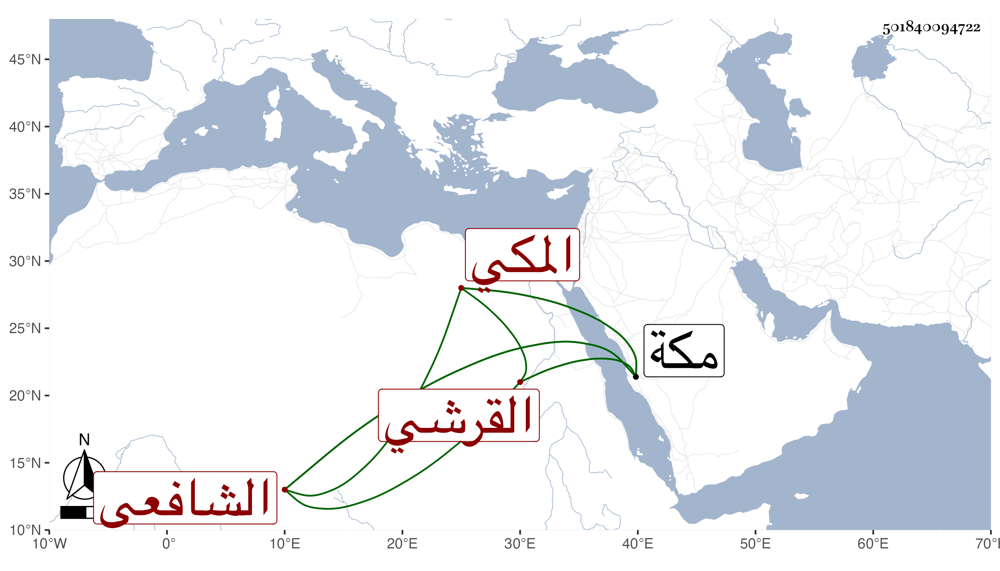

0902Sakhawi.DawLamic.ITO20230111-ara1.EIS1600.501840094722
Biography ID: 501840094722
223
أحمد بن محمد بن أحمد بن ظهيرة بن أحمد بن ظهيرة بن أحمد بن عطية ابن ظهيرة الشهاب بن الخطيب الكمال أبي الفضل بن الشهاب القرشي المكي الشافعي والد أبي الفضل محمد الآتي ويعرف كسلفه بابن ظهيرة وأمه فتاة لأبيه . ولد بمكة ونشأ بها وسمع من أبيه وابن الجزري والشامي وابن سلامة والشمس الكفيري وغيرهم ، وأجاز له عائشة ابنة ابن الهادي وابن طولوبغا وابن الكويك والمجد اللغوي ، وآخرون وتفقه بالوجيه عبد الرحمن بن الجمال المصري ودرس ، واختل بأخرة وبرأ . ومات في أواخر شوال سنة ثمان وثلاثين بمكة .
